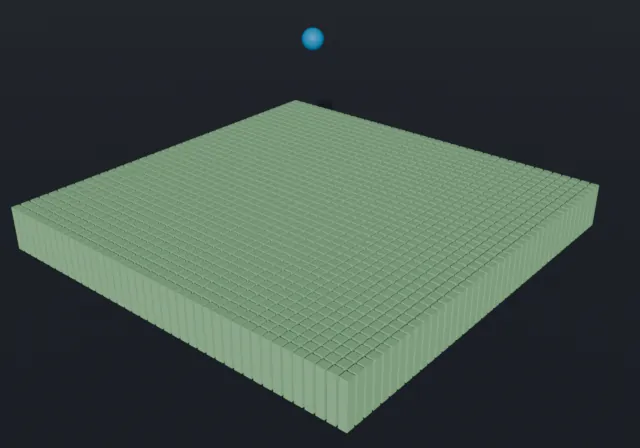
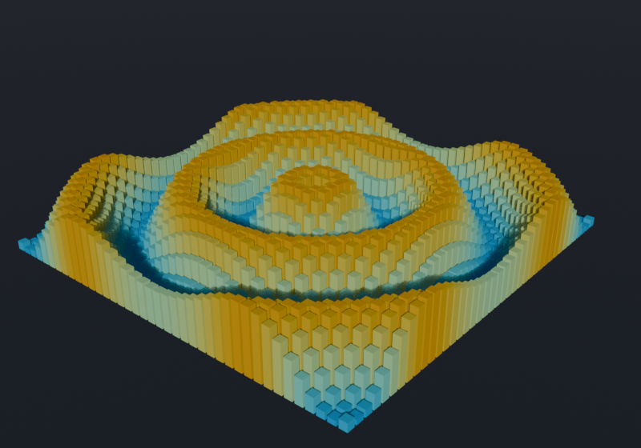
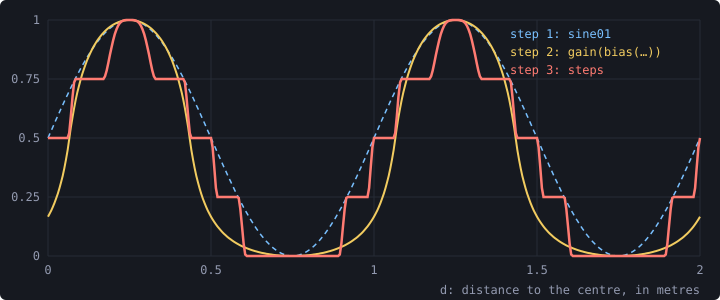
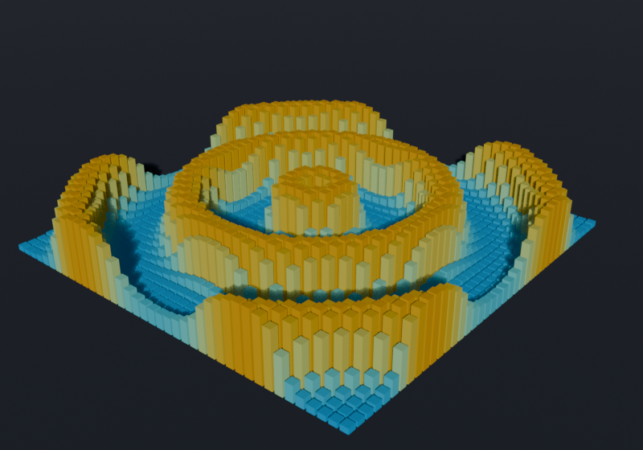
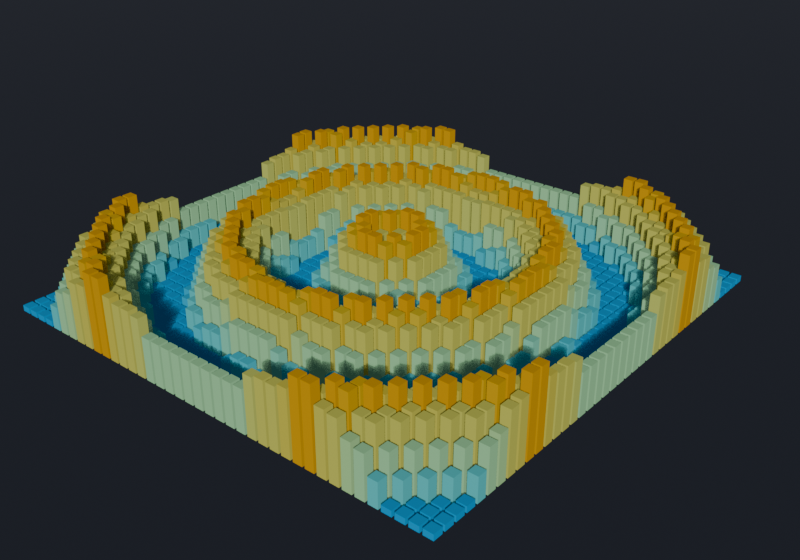
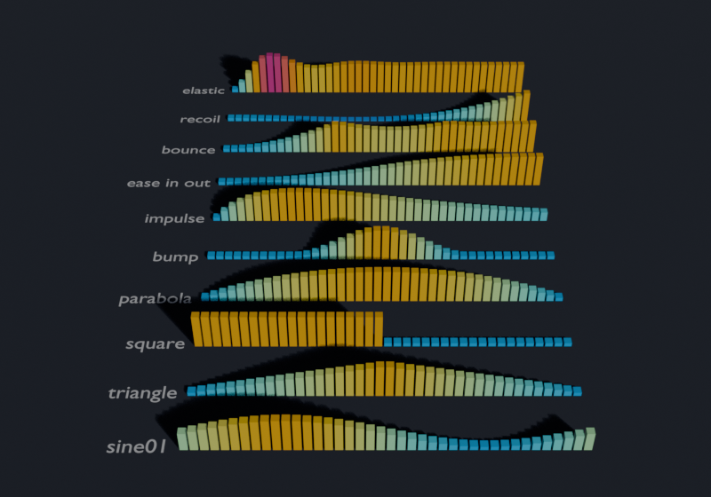
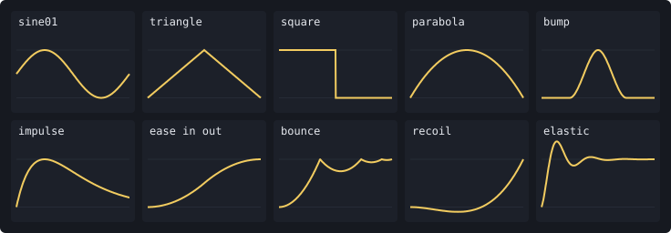
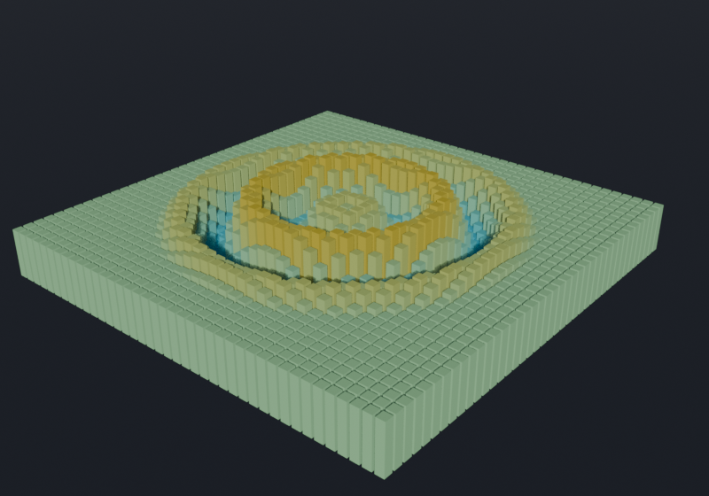

A square of 1,600 columns, and one number per column: how high it stands. A wave gives that number, a handful of small functions bend it, and the same functions, run over time instead of space, make it move.
Everything here comes from the language and the free module math of the standard library. It is a good first tutorial: each idea of the language is explained where it first appears.

You need Blender 5 and the Base Node add-on, whose standard library has the module math. Nothing else: no texture, no add-on of its own, nothing to buy.
Every block below is a complete .bn file, its code beside the nodes it builds. Two ways to try a step:
shaping_motion at the 3D cursor. A click on the file icon downloads the file instead.
The pictures are rendered from these exact files by render.py, with EEVEE. The plots are drawn by curves.py from the same formulas, and render.py checks that Blender's columns follow them.
Start with the whole file. A .bn file is a list of graphs; each graph becomes a node group in Blender, and its body is the nodes inside, written as calls.
step1_wave.bn: shaping_motion, columns, column, shade, Painted
use math (sine01, palette) brings two graphs of the module math into this file. They are node groups like the ones you write; once in Blender, you can open them and read their nodes.geometry graph shaping_motion(rings: Float = 1.0) -> Geometry declares a Geometry Nodes group: one input, rings, a float of default 1.0, and a geometry out. @example shaping_motion, in the head of the file, is the graph a drag puts on a new object; its inputs show on the modifier.sine01(d * rings) is a call: a sine01 node in the tree, its input wired to d * rings. Built-in nodes are called the same way, by their name: Grid(…), Cube(…), RealizeInstances().|> passes what is on its left as the first input of the node on its right: Grid(…) |> MeshToPoints() is a grid, then its points. Read columns top to bottom as a chain: a grid of 40 by 40 vertices, 4 m wide, made points, each point given a colour, a column put on each point, the columns made real geometry, then painted.
Position() is not one position. It is a field: a recipe that Blender evaluates once for each point, where the value is used. So d, the distance to the centre in the XY plane, is a different number on every point of the grid, and so is sine01(d * rings).
shaping_motion hands that recipe to columns as its value; there, InstanceOnPoints reads it on each point to scale its column, from 5 cm up to 65 cm (value * height + 0.05, height 0.6), and StoreNamedAttribute reads it again to store a colour: shade calls palette, a cosine palette, with inputs that go from azure at 0 through green at 0.5 to orange at 1. The material Painted reads that colour back by its name, color.
sine01 is a sine squeezed between 0 and 1, one period per unit: 0.5 at whole numbers, 1 a quarter of the way, 0 at three quarters. With rings at 1.0 the crests stand at 0.25 m and 1.25 m from the centre, and in the corners at 2.25 m.

Try: set rings to 2.0 for twice as many crests, or to 0.5 for one.
A sine is round everywhere. Most of the time you want another shape: sharp crests and wide flat troughs, or plateaus with steep sides. You could look for another formula each time; it is simpler to keep the sine and bend its values.
That is what the shaping functions of math do: they take a value from 0 to 1 and give back a value from 0 to 1, with 0 still at 0 and 1 still at 1, but a different way between.
step2_shape.bn: shaping_motion
bias(x, force) pushes values toward 0 when force is below 0.5, toward 1 above it; 0.5 changes nothing. At 0.3, a value of 0.5 comes out at 0.3: the columns spend longer low, the crests get thinner.gain(x, contrast) is two biases back to back, one each side of 0.5: below 0.5, contrast pushes values away from the middle, toward 0 and 1. At 0.25, the slopes get steeper and the tops and bottoms flatter: the wave turns toward a square.
They nest: gain(bias(wave, force), contrast) bends the wave with bias, then bends the result with gain. The three inputs show on the modifier, with their ranges: in 0.001..0.999 keeps force and contrast off 0 and 1, where bias would divide by zero.

bias and gain, step 2. Red: cut into steps, step 3.
Try: set force to 0.7: the crests widen and the troughs narrow. Set contrast to 0.75: gain does the opposite, values gather around 0.5.
steps turns a smooth slope into a staircase. It keeps the whole part of its input, floor(x), and over the last rise of each unit it climbs smoothly to the next: 0.25 is a step whose riser takes the last quarter of its width.
Since a step is one unit wide, the wave is first spread over levels units, then brought back between 0 and 1:
step3_steps.bn: shaping_motion
steps(wave * levels, rise) / levels, with levels 4, gives the heights 0, 0.25, 0.5, 0.75 and, on the very crests, 1. Here it cuts the plain wave of step 1, so the terraces are as wide as the slopes they replace.
levels is an Int: multiplied by a float, it is converted, as in any language.

Try: set rise to 1.0: the risers take the whole step, and the staircase is nearly the wave again. Set it to 0.01 for hard edges.
The module has more shapes than a wave can show at once. To compare them, the grid becomes a chart: one row of 40 columns per function, t from 0 at the left end of the row to 1 at the right end, and each column as high as the function at its t.
step4_gallery.bn: shaping_motion, row, t
t() is a graph with no input that returns a field: Position().x / 4.0 + 0.5, 0 at x = -2, 1 at x = 2. Named once, it is read in every row, on that row's own points.row takes the field value and a name. MeshLine lays 40 points along X, 0.7 m behind the row before it; each gets a column value * 0.4 + 0.05 high. StringToCurves writes the name, FillCurve turns its letters into faces, on the floor at the left.JoinGeometry puts the ten rows together, and SetMaterial paints them all at once.
render.py checks every column against curves.py.
| Function | Its shape, t from 0 to 1 | Good for |
|---|---|---|
sine01 | One period of a sine, 0.5 to 1 to 0 and back to 0.5. | Smooth back-and-forth: breathing, waves. |
triangle | 0 up to 1 at the middle, straight down to 0. | Back-and-forth at a constant speed. |
square | 1 for the first half (duty_cycle 0.5), then 0. | On and off: blinking, a switch. |
parabola | 0 at both ends, 1 at the middle. | A jump: up then down, once. |
bump | 1 at center 0.5, 0 beyond half_width 0.25 on each side. | A soft local bulge, then nothing. |
impulse | Up to 1 at t = 1 / stiffness, 0.25 with the default 4, then a slow fall. | A kick, a shock, a flash. |
ease in out | 0 to 1, slow at both ends. | A move from one place to another. |
bounce | 0 to 1 in four arcs, touching 1 at t ≈ 0.36, 0.73 and 0.91 before it settles. | A ball: its height is 1 − bounce(t). |
recoil | Down to −0.1 at t ≈ 0.42, then up to 1. | A wind-up before the move. |
elastic | Past 1, to about 1.37 at t ≈ 0.13, then rings and settles at 1. | A spring let go. |
Every column has a base of 5 cm, so recoil's dip below 0 still shows: there its columns are 1 cm high. And square's last column is low: t there is a hair short of 1 in single precision, still in the second half of the period.
Try: give impulse a stiffness of 10 (impulse(x, 10.0)): the peak moves to 0.1, the fall gets quicker. Give parabola a sharpness of 4: a narrow spike.
So far t was a place. Make it a time, and the same functions describe motion: ease in is something speeding up, impulse a kick that dies away. A drop, falling, then its ripples:
step5_drop.bn: shaping_motion
SceneTime().seconds is the time at the current frame. Divided by period, 2.5 s, its fractional part u runs from 0 to 1 and starts again: 60 frames at 24 frames a second. Everything after depends on u alone, so the animation loops.fall, 0.25), u / fall goes from 0 to 1 and the drop goes down from 2 m by ease_in(u / fall) * 1.55: slow at first, faster and faster, as a falling thing does, until it reaches the water at 0.45 m. After that, Switch lets it through no longer: u < fall is false.local is the time since the ripple reached this column. The ripple leaves the centre when the drop lands, at u = fall, and takes lag, 0.15 of the loop, per metre. Before that, max holds local at 0.impulse(local, stiffness), a kick that peaks 1/14 of the loop after the front and dies away; a sine of 10 crests per loop, the water going up and down; and bump(d, center: 0.0, half_width: reach), 1 at the centre and down to 0 at 3 m, so the ripple weakens as it spreads. Each column then oscillates around the water level: ripple * 0.5 + 0.5, with a height of 0.8, is 0.45 m when still.
The ripple reaches a column one metre further out 0.15 of a loop later, and in that time the water there goes up and down 1.5 times: the crests are 1 / (10 × 0.15), about 0.67 m, apart. The loop also has to join up: by the last frame, the ripples have died down to about 4 mm, which render.py checks, and the first frame is flat water again.
Named inputs in a call, as bump(d, center: 0.0, half_width: reach), set an input by its name; an input with a space, "half width", is named with an underscore.

Try: play the timeline. Then set lag to 0.3: slower ripples, closer together. Set crests to 4: long, lazy swells.
The drop and its ripples, in one file. Drag the card onto empty space in Blender's 3D Viewport and keep Instantiate the Example, then play the timeline. A click on the card downloads the file.
The steps before it, to start again from any of them:
The files, with the scripts that render this page's pictures and draw its plots, are in examples/tutorials/shaping_motion/.